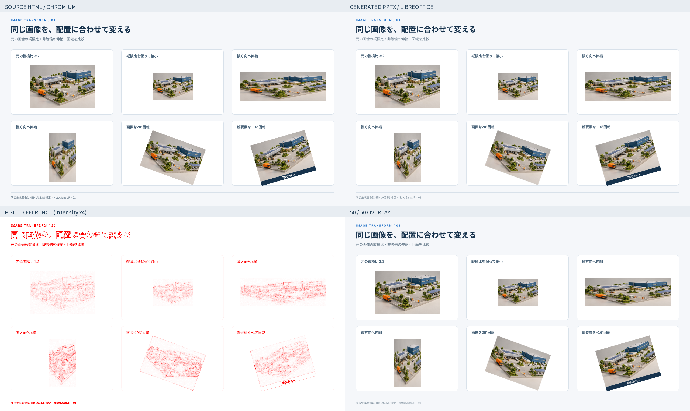
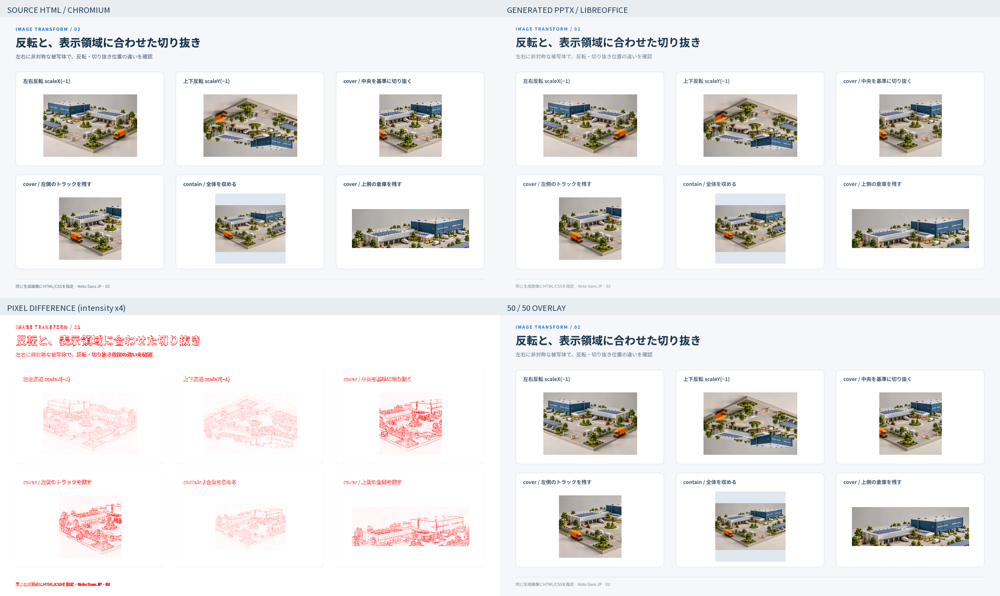
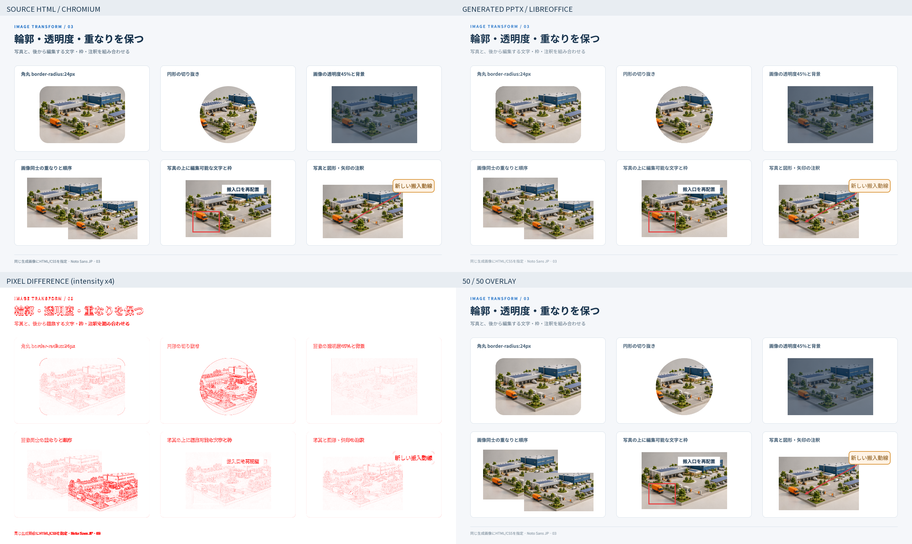
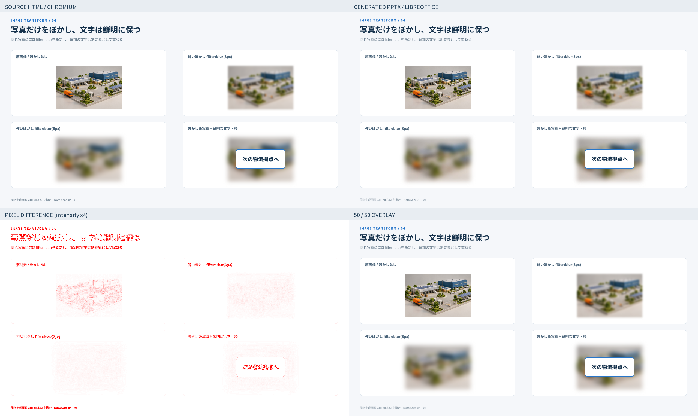
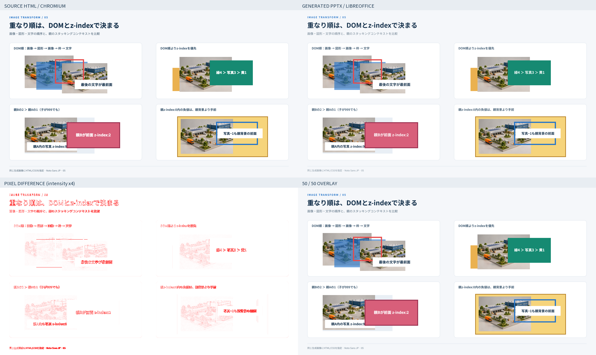

入力はChromium、変換後PPTXはLibreOffice Impress → PDF → PDFBoxで描画しました。PowerPointアプリそのもののスクリーンショットではありません。文字のアンチエイリアスやフォント描画も差分に含み、ピクセル全一致を合格条件にはしていません。
全体変換：成功。12を超える最大チャンネル差を「差分ピクセル」とします。画像の位置合わせ・自動縮尺補正は行いません。ヒートマップだけは差分強度を4倍にしています。
差分ピクセル 3.14% · 平均絶対誤差 1.24 / 255 · 輪郭の不一致 23.87%

入力HTML · 生成PPTXの描画 · 差分 · 輪郭差分 · 重ね合わせ
| パネル | 差分ピクセル | 平均誤差 / 255 | 輪郭の不一致 |
|---|---|---|---|
| 元の縦横比 3:2 | 2.74% | 1.25 | 16.73% |
| 縦横比を保って縮小 | 2.13% | 0.77 | 16.77% |
| 横方向へ伸縮 | 4.85% | 1.55 | 23.33% |
| 縦方向へ伸縮 | 4.35% | 1.25 | 29.22% |
| 画像を20°回転 | 5.09% | 1.62 | 33.29% |
| 親要素を−16°回転 | 4.56% | 1.70 | 24.65% |
差分ピクセル 4.17% · 平均絶対誤差 1.62 / 255 · 輪郭の不一致 23.06%

入力HTML · 生成PPTXの描画 · 差分 · 輪郭差分 · 重ね合わせ
| パネル | 差分ピクセル | 平均誤差 / 255 | 輪郭の不一致 |
|---|---|---|---|
| 左右反転 scaleX(−1) | 3.22% | 1.36 | 17.26% |
| 上下反転 scaleY(−1) | 3.15% | 1.37 | 17.81% |
| cover / 中央を基準に切り抜く | 8.55% | 2.76 | 29.60% |
| cover / 左側のトラックを残す | 7.96% | 2.54 | 29.53% |
| contain / 全体を収める | 2.38% | 0.94 | 16.07% |
| cover / 上側の倉庫を残す | 8.34% | 2.58 | 25.03% |
差分ピクセル 3.81% · 平均絶対誤差 1.60 / 255 · 輪郭の不一致 22.09%

入力HTML · 生成PPTXの描画 · 差分 · 輪郭差分 · 重ね合わせ
| パネル | 差分ピクセル | 平均誤差 / 255 | 輪郭の不一致 |
|---|---|---|---|
| 角丸 border-radius:24px | 3.08% | 1.36 | 16.63% |
| 円形の切り抜き | 8.10% | 2.55 | 30.38% |
| 画像の透明度45%と背景 | 1.06% | 1.08 | 19.81% |
| 画像同士の重なりと順序 | 11.02% | 3.79 | 28.37% |
| 写真の上に編集可能な文字と枠 | 3.93% | 1.69 | 17.26% |
| 写真と図形・矢印の注釈 | 3.82% | 1.63 | 17.62% |
差分ピクセル 1.51% · 平均絶対誤差 0.93 / 255 · 輪郭の不一致 20.72%

入力HTML · 生成PPTXの描画 · 差分 · 輪郭差分 · 重ね合わせ
| パネル | 差分ピクセル | 平均誤差 / 255 | 輪郭の不一致 |
|---|---|---|---|
| 原画像 / ぼかしなし | 1.82% | 0.86 | 16.30% |
| 弱いぼかし filter:blur(3px) | 0.58% | 0.61 | 10.69% |
| 強いぼかし filter:blur(8px) | 0.58% | 0.57 | 11.10% |
| ぼかした写真 + 鮮明な文字・枠 | 1.49% | 1.09 | 21.87% |
差分ピクセル 2.41% · 平均絶対誤差 1.23 / 255 · 輪郭の不一致 20.09%

入力HTML · 生成PPTXの描画 · 差分 · 輪郭差分 · 重ね合わせ
| パネル | 差分ピクセル | 平均誤差 / 255 | 輪郭の不一致 |
|---|---|---|---|
| DOM順：画像 → 図形 → 画像 → 枠 → 文字 | 3.05% | 1.57 | 22.36% |
| DOM順よりz-indexを優先 | 1.80% | 0.92 | 15.51% |
| 親Bの2 ＞ 親Aの1（子が999でも） | 3.07% | 1.41 | 17.30% |
| 親z-index:0内の負値は、親背景より手前 | 3.15% | 1.57 | 16.39% |